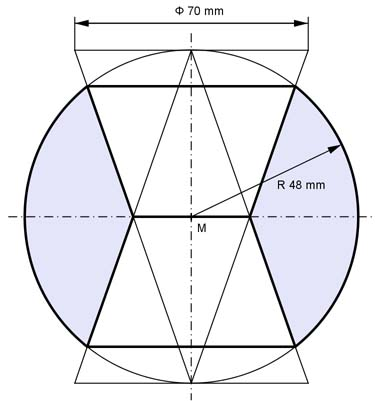

Wie löse ich Matheaufgaben?
Volumen
Aufgabe 340 Für 3 D Filme hat ein Kino eine Kuppel in Form einer Halbkugel mit einem Durchmesser von 15 m. Sie soll neu gestrichen werden. Wie groß ist die zu streichende Fläche A?
Aufgabe 341 Ein Luftballon wird so weit aufgeblasen, dass sich seine kugelförmige Oberfläche verdoppelt. Um welchen Faktor m hat sich sein ursprüngliches Volumen vergrößert? m =
Aufgabe 342 Ein Mensch hat ungefähr 400 Millionen kugelförmige Lungenbläschen mit einem Durchmesser von 0,2 mm. Wie groß müsste der Radius r einer Kugel sein, die die gleiche Oberfläche hat wie alle Lungenbläschen zusammen?
Aufgabe 343 Eine Discokugel mit einem Durchmesser von 40 cm hat auf der Oberfläche kleine je 1 cm² große Spiegel. Wie viele solcher Spiegel passen darauf? n =
Aufgabe 344 Wie viele Bleikugeln mit einem Radius von 1 mm braucht man, um daraus eine Kugel mit einem Radius von 10 cm herzustellen?
Aufgabe 345 Ein Tonquader hat eine Länge von 10 cm, eine Breite von 12 cm und eine Höhe von 15 cm. Wie viele Tonkugeln mit einem Durchmesser von 3 mm kann man daraus formen? n = Kugeln
Aufgabe 346 Aus einer Kugel mit einem Durchmesser von 60 cm sollen 1 000 kleine Kugeln erschmolzen werden? Wie groß ist der Durchmesser d einer kleinen Kugel?
Aufgabe 347 Ein Jugendhandball hat einen Umfang von 54 cm. Wie viel Leder braucht man zu seiner Herstellung, wenn mit 20%Verschnitt gerechnet wird? Für einen Männerhandball barucht man einschließlich einem Verschnitt von 20% 1 330 cm² Leder. Wie groß ist sein Umfang U? U = cm
Aufgabe 348 6 Spielkugeln sind in einer Holzkiste (Länge 24 cm, Breite 16 cm) so verpackt, dass sie die Außenwände berühren. Welchen Durchmesser d hat eine kleine Kugel, die in die Zwischenräume zwischen den großen Kugeln passt?
Aufgabe 349 Wie schwer ist eine Hohlkugel aus Glas mit einem Außendurchmesser von 7 cm und einer Wandstärke von 2 mm, wenn sie eine Dichte von 2,5 g/cm3 hat? Sie wiegt g.
Aufgabe 350 Eine Platinkugel mit einem Radius von 4 cm und 2 mit einem Radius von je 3 cm stehen zur Wahl. Um wie viel Prozent p unterscheiden sich deren Volumina, wenn das größere 100% entsprechen soll?
Aufgabe 351 Ein halbkugelförmiger Kupferkessel mit einem Durchmesser von 1,35 m wird in einer Großküche eingesetzt. Er soll mit Butter ausgestrichen werden. Wie viel Butter braucht man, wenn 1 g für 10 dm2 ausreicht? Wie viel l Suppe können darin maximal zubereitet werden? l
Aufgabe 352 Wie viel Kugeln Eis können aus 3 Packungen mit jeweils 1 l Inhalt mit einem Eisportionierer mit 5 cm Durchmesser ausgegeben werden?
Aufgabe 353 Ein Messzylinder zeigt eine Wassermenge von 58 cm3 an. Welche Wassermenge M wird angezeigt, wenn 3 Kugeln mit den Radien 1 cm, 1,5 cm und 2 cm eingetaucht werden? Wie viele Kugeln n mit einem Radius von 1,5 cm könnte man noch hinzufügen, wenn naximal 200 cm³ hineinpassen? M = cm3
Aufgabe 354 Wie dick ist ein Ölfilm, der aus einem Öltropfen mit einem Durchmesser von 4 mm entsteht und sich auf einer kreisrunden Fläche mit einem Radius von 1 200 mm ausbreitet?
Aufgabe 355 Für die Hülle eines Freiballons braucht man 415 m2 Stoff? Wie groß ist sein Volumen V? V = m3
Aufgabe 356 In einen zum Teil mit Wasser gefüllten zylindrischen Messbecher mit einem Radius von 5 cm wird eine Stahlkugel geworfen, dabei steigt der Wasserspiegel um 4 cm an. Wie groß ist der Radius r der Kugel?
Aufgabe 357 Atomreaktoren sind von einer kugelförmigen Sicherheitshülle aus Stahl umgeben. Wie viel wiegt eine solche Hülle bei einem Kugelinnendurchmesser von 56 m, einer Wandstärke von 30 mm und einer Dichte von 7,94 kg/dm3? Sie wiegt t.
Aufgabe 358 Aus 4 Metallkugeln mit einem Durchmesser von 50 mm soll eine erschmolzen werden. Wie groß ist der Radius r der großen Kugel? Um wie viel Prozent ist die Oberfläche dergroßen Kugel kleiner als die der 4 Kugeln?
Aufgabe 359 Eine Lunge enthält etwa 400 000 000 Lungenbläschen mit einem Durchmesser von 0,2 mm. Wie groß ist die Oberfläche Oges aller Lungenbläschen? Welchen Durchmesser d hätte eine Kugel mit der gleichen Oberfläche? Welche Oberfläche O hätte eine Kugel, die das gleiche Volumen wie die gesamten Lungenbläschen hat? O = dm2
Aufgabe 360 Aus einer Bleikugel mit dem Durchmesser 1 cm sollen 10 gleich große Kugeln gegossen werden. Wie groß ist der Durchmesser d einer dieser Kugeln?
Aufgabe 361 Wie schwer ist eine Chromschicht von 0,2 mm Dicke und einer Dichte von 6,8 g/cm3, die auf 64 Stahlkugeln mit einem Durchmesser von je 5 cm aufgebracht wird? Es sind g.
Aufgabe 362 Die Oberfläche einer Kugel mit einem Radius von 8,4 cm wird durch Abschleifen um ein Drittel verkleinert. Wie groß ist dann der Durchmesser d der neuen Kugel?
Aufgabe 363 Eine Hohlkugel mit einer Wandstärke von 3 mm soll 1 l fassen können. Wie groß ist ihr äußerer Durchmesser d? d = cm
Aufgabe 364 Eine Messingkugel mit einer Dichte von 8,85 g/cm3 hat eine Masse von 1,6 kg. Wie groß ist ihr Durchmesser d?
Aufgabe 365 Wie groß ist der Materialbedarf M für 100 halbkugelförmige Dichtungen mit einem Radius von 7 mm, die auf der ebenen Fläche eine 3 mm tiefe Ausbohrung mit 4 mm Durchmesser haben? M = cm3
Aufgabe 366 Wie groß ist die Massendifferenz m von 1 000 Stahlkugeln mit einem Durchmesser von 1 mm und einer Dichte von 7,85 g/cm3 und einem Stahlwürfel mit einer Seitenlänge von 1 cm?
Aufgabe 367 Welche Dichte hat eine massive Kugel, wenn sie zur Hälfte in Wasser eintaucht? ρ = g/cm3
Aufgabe 368 Für eine kugelförmige Ballonhülle braucht man 12,5 m² Stoff. Wie groß ist der Durchmesser d des Ballons, wenn mit 10% Verschnitt gerechnet wird?
Aufgabe 369 Die kugelförmige Spitze eines Turmes hat einen Durchmesser von 30 cm. Sie soll mit 10 g Gold mit einer Dichte von 17 g/cm3 überzogen werden. Wie dick ist die Schicht? mm
Aufgabe 370 Ein zylindrischer Bottich mit einem Innendurchmesser von 0,9 m und einer Innenhöhe von 1,2 m soll durch einen halbkugelförmigen mit gleichem Volumen ersetzt werden. Welchen Innendurchmesser d hat der neue Bottich?
Aufgabe 371 Eine kugelförmige Gummiblase mit einer Wandddicke von 0,4 mm schließt 1 l Gas ein. Welche Wanddicke s hat die Blase, wenn sich das Gasvolumen durch Erwärmung auf 1,8 l vergrößert und sich die Blase gleichmäßig ausdehnt? s = mm
Aufgabe 372 Eine heiße Kugel mit einem Volumen von 2,4 dm3 schrumpft beim Erkalten um 10%. Wie groß ist ihr Durchmesser d nach dem Erkalten?
Aufgabe 373 Aus einer massiven Halbkugel mit einem Durchmesser von 34 cm soll soll eine Halbkugel so ausgedreht werden, dass sie nur noch halb soviel wiegt. Wie groß ist der Durchmesser d der Ausdrehung? d = cm
Aufgabe 374 Eine Halbkugel aus Blech mit einem Radius von 22 cm ist aus einer Kappe und einer Zone zusammengesetzt. Wie hoch ist die Zone, wenn deren Fläche gleich groß wie die der Kappe sein soll?
Aufgabe 375 Eine halbkugelförmige Steinplastik mit einem Durchmesser von 70 cm, besteht aus einer Schicht und einem Segment mit gleicher Höhe. Wie groß ist das Volumen V der Schicht? V = dm3
Aufgabe 376 Damit eine Holzkugel mit einem Durchmesser von 8 cm auf ein Rundholz mit kegeliger Spitze geleimt werden kann, ist eine Aussparung in der Form eines Sektors mit einem Kegelöffungswinkel von 60° nötig. Wie groß ist der Abfall A?
Aufgabe 377 Ein Deckel in Form eines Kugelsegmentes hat einen Radius von 16 cm und eine Höhe von 2 cm. Welchen Radius r muss die Gussform haben, wenn er zu einem Segment mit der Höhe 4 cm umgegossen werden soll? r = cm
Aufgabe 378 Wie groß ist die Masse m des Kugelbolzens, wenn seine Dichte 7,85 g/cm3 beträgt?
Aufgabe 379 Bei einer Härteprüfung wird eine Stahlkugel 0,4 cm tief in ein Werkstück eingedrückt. Die Eindruckfläche ist 4,5 cm2 groß. Welchen Durchmesser d hat die Kugel? d = cm
Aufgabe 380 Ein kugelförmiges Schiebegewicht mit einem Durchmesser von 4 cm und einer Dichte von 7,2 g/cm³ gleitet auf einer Stange von 8 mm Durchmesser. Wie groß ist seine Masse m, wenn es mittig aufgebohrt wurde?
Aufgabe 381 Wie groß ist die Fläche A der Kugelpfanne, die als Aufnahme für ein Stützgelenk dient? A = cm2
Aufgabe 382 Eine Zierkugel mit einem Durchmesser von 80 cm ist so abgeflacht, dass die Auflagefläche einen Durchmesser von 25 cm hat. Wie groß ist das Volumen V der Kugel?
Aufgabe 383 Wie groß ist die Masse m der symmetrischen Linse bei einer Dichte von 3,1 g/cm3? m = g
Aufgabe 384 Wie groß ist die gekrümmte Fläche A der symmetrischen Doppeltkonkavlinse?
Aufgabe 385 Auf einen Zylinder mit einem Durchmesser von 1,5 m sind beidseitig 25 cm hohe Kugelkappen angeschweißt. Der so entstandene Kessel hat eine Gesamtlänge von 3,8 m. Wie groß ist seine Oberfläche O? O = m2
Aufgabe 386 Welche Masse m haben 50 Bolzen mit einer Dichte von 7,85 g/cm3?
Aufgabe 387 Ein Stehaufmännchen hat einen halbkugelförmigen Kunststofffuß mit einem Durchmesser von 25 mm. Wie groß ist der Materialbedarf M für ein 8 mm hohes Kugelsegment aus Blei, mit dem er beschwert wird? M = cm3
Aufgabe 388 Eine Kugelvase hat einen Innendurchmessser von 16 cm. Boden und Öffnung sind gleich groß und haben einen Durchmesser von 9 cm. Wie groß ist das Volumen V der Vase?
Aufgabe 389 Ein Kessel besteht aus einem 2,4 m langen Rohr mit einer lichten Weite von 80 cm. Er ist auf beiden Seiten mit einer Kugelkappe abgeschlossen, deren Mittelpunkt im Schwerpunkt des Rohres liegt. Wie groß sind das Volumen V und die Oberfläche O des Kessels? V = m3
Aufgabe 390 Wie groß sind das Volumen V. die Oberfläche O und die Fläche A des Achsenschnittes des Ziersteins aus Marmor?
Aufgabe 391 Wie groß ist die Wassermenge V in dem Stehkolben? V = cm3
Aufgabe 392 Wie groß ist das Volumen V, das der Behälter für Weizen einschließlich Deckel umfasst?
Aufgabe 393 Zwei Kugeln mit einem Radius von 27 mm und einem von 15 mm werden so abgeschliffen, dass sie eine gemeinsame Berührungsfläche mit einem Durchmesser von 23 mm haben. Wie groß sind die Volumina der beiden Segmente nach dem Abschleifen, kleineres zuerst? V1 = mm3
Aufgabe 394 Wie groß ist die Masse m des Rings, wenn er eine Dichte von 21,4 g/cm3 hat?
Aufgabe 395 Wie groß ist die Masse m des Deckels aus Grauguss, wenn er eine Dichte von 7,2 g/cm3 hat? m = kg
Aufgabe 396 Wie groß ist das Volumen V der Kugel nach dem Aufbohren? 
Aufgabe 397 In einer 100 g Tüte sind 20 Schokokugeln mit einem Durchmesser von 20 mm. Wie viel Kugeln müssten in einer Tüte sein, wenn ihr Durchmesser halb so groß wäre? Welchen Durchmesser d hätte eine Kugel aus der gleichen Menge Schokolade wie der Inhalt einer Tüte? d = cm
Aufgabe 398 Eine Hohlkugel besteht aus 80 cm³ Schokolade und hat einen Umfang von 40 cm. Welche Dicke d hat die Schicht? Welchen Durchmesser d hätte eine mit einer Schichtdicke von 3 mm bei gleicher Menge?